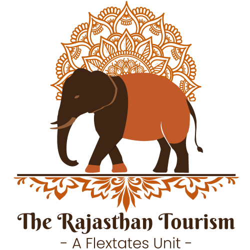
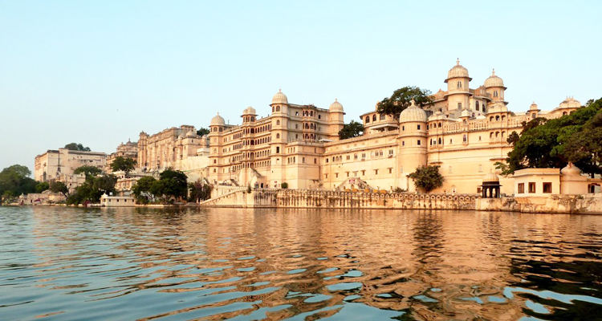
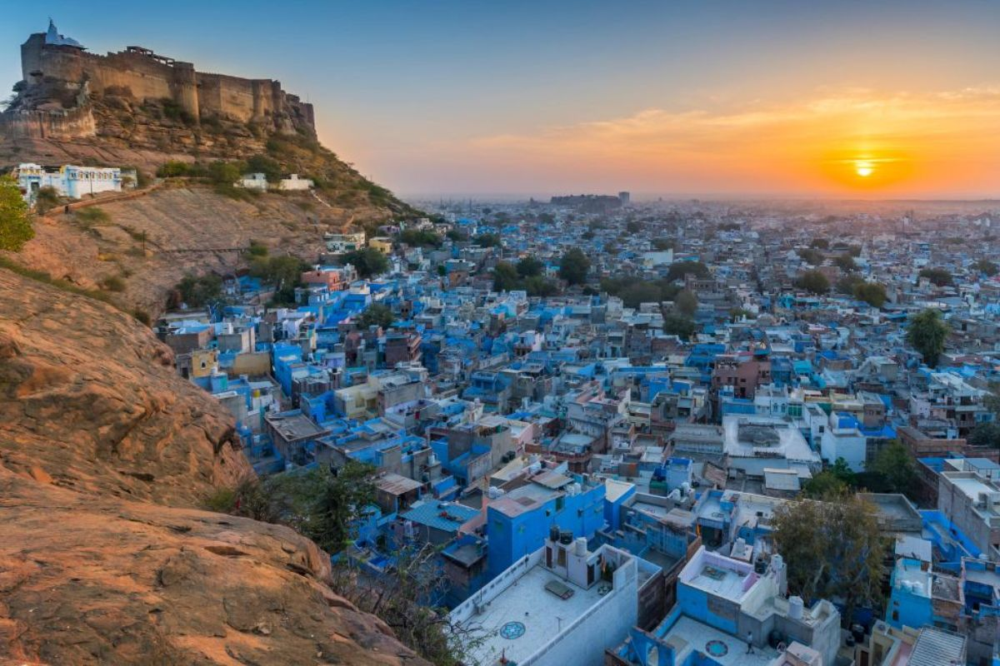
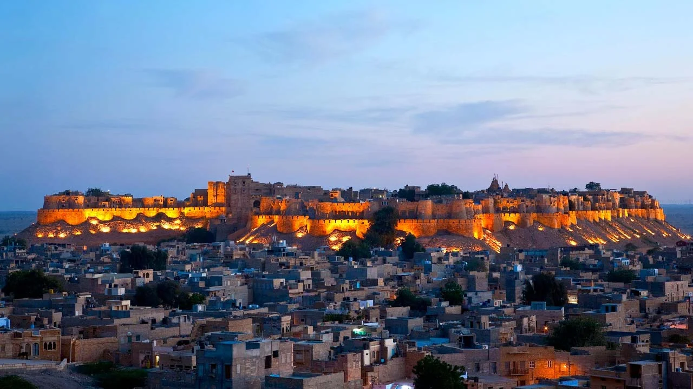

The Rajasthan Tourism
Padharo Mhare Desh
There are many beautiful places to visit in Rajasthan.
1. Jaipur - Hawa Mahal
2. Jodhpur - Mehrangarh Fort
3. Jaisalmer - Golden Fort
4. Udaipur - City Palace
5. Rajsamand - Kumbhalgarh Fort

Jaipur is the capital of Rajasthan.
Hawa Mahal is very famous here.

Udaipur is called the City of Lakes.
Lake Pichola is very beautiful.

Jodhpur is called the Blue City.
Mehrangarh Fort is on a big hill.

Jaisalmer is called the Golden City.
People enjoy camel ride in Thar Desert.